Je raconte des histoires vraies.
Des contenus, des identités et des supports qui tiennent la route. J'aime quand c'est carré. J'aime encore plus quand une bonne idée vient tout bousculer.
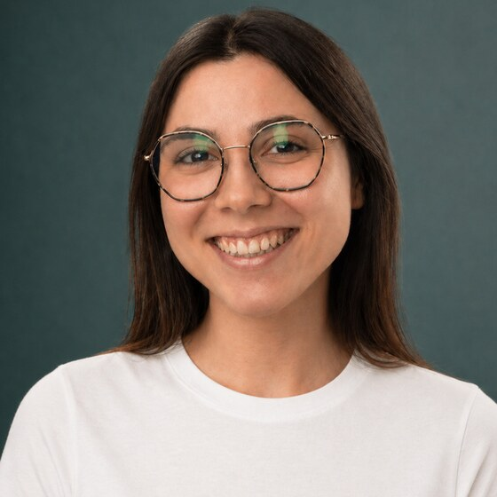
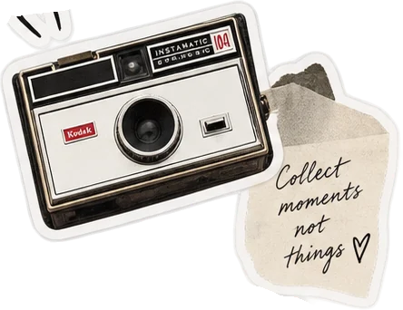
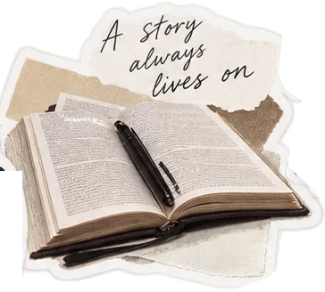
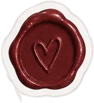
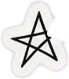
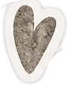
Ce qui m'anime, c'est de comprendre une organisation, son public et ses enjeux avant d'écrire la moindre ligne. Ensuite, je laisse les idées partir dans tous les sens, puis je ne garde que les bonnes.
Étudiante en BUT Information-Communication, parcours Communication des organisations à l'IUT Lyon 3, je me suis formée à une communication polyvalente : interne, externe, éditoriale, visuelle, événementielle.
Mon stage de six semaines au Centre Hospitalier d'Ardèche Nord m'a plongée dans une communication institutionnelle exigeante, avec de vraies contraintes et de vrais destinataires. Rédaction pour le journal interne, conception d'un jeu pédagogique, création de supports patients : j'ai appris à livrer quelque chose qui sert à quelqu'un, pas seulement à valider un exercice.
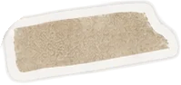
Quatre projets, du terrain à l'école
Lisa en mission
Une journée de chargée de com', version jeu. Saute par-dessus les galères du métier, attrape ce qui me fait du bien, et tiens le plus longtemps possible.
Espace, clic ou tap pour sauter. Plus tu tiens, plus tu sautes haut.
Ce qui me fait vibrer quand l'ordi est fermé
psst… les stickers se déplacent ✦Mes passions nourrissent ma façon de communiquer : le sens du rythme de la musique, le goût des bonnes histoires, la curiosité des voyages. Et un peu de compétition.
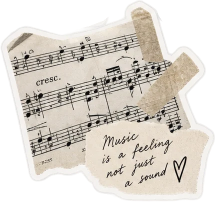
Musique
Écoute variée et toujours à la recherche d'un nouvel artiste.
Lecture
Fantasy, romance et thrillers. Toujours un livre dans le sac.
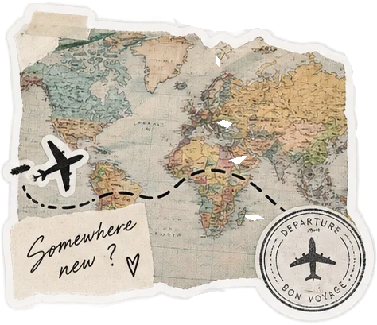
Voyages
Découvrir d'autres cultures, organiser l'itinéraire, et monter des vlogs au retour.
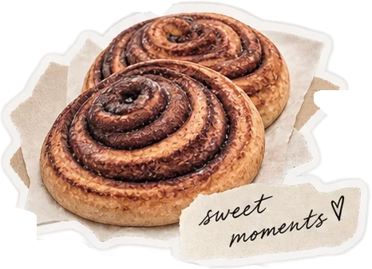
Pâtisserie
J'en rate une sur deux, sans jamais me décourager.
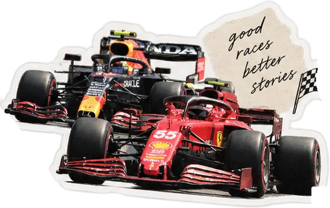
Formule 1
Je suis chaque saison comme une série, stratégie comprise.
Ma méthode, en trois temps
Comprendre avant de créer
Je commence toujours par le public et la contrainte réelle, pas par l'idée la plus séduisante. Un brief flou se clarifie en posant les bonnes questions avant d'ouvrir un logiciel.
Construire, puis déranger
Une structure claire d'abord : plan, rétroplanning, gabarit. Ensuite seulement, je laisse de la place à une idée qui sort du cadre, tant qu'elle sert le message.
Livrer ce qui sert vraiment
Un visuel réussi est un visuel utilisé. Je teste, je corrige, et je livre un fichier prêt à vivre sur le terrain, pas une maquette qui reste dans un dossier.
On construit quelque chose ensemble ?
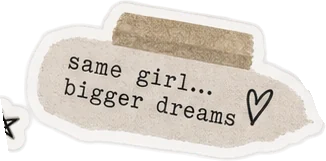
Je cherche un stage à partir du 12 avril 2027 (8 semaines minimum), puis une alternance pour 2027-2028. Si un poste, une question ou juste une discussion sur le métier vous intéresse, écrivez-moi.